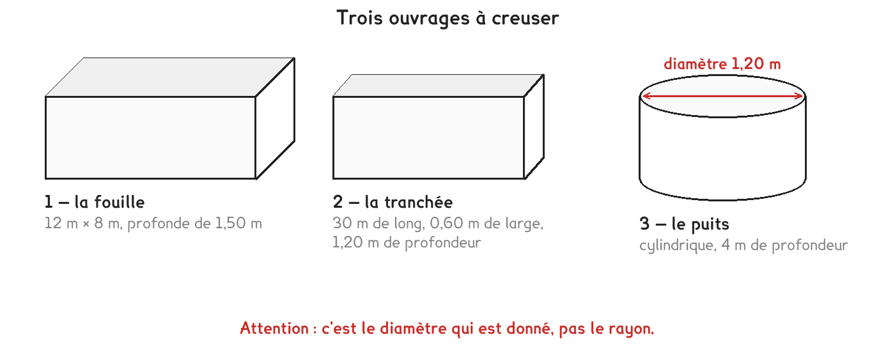
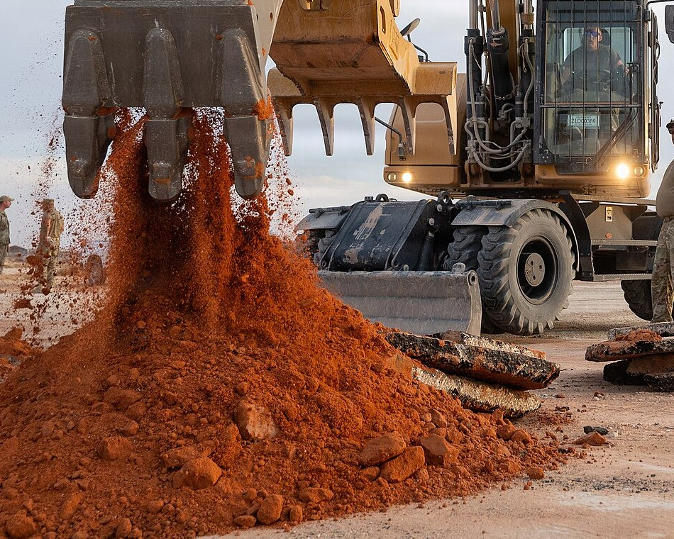
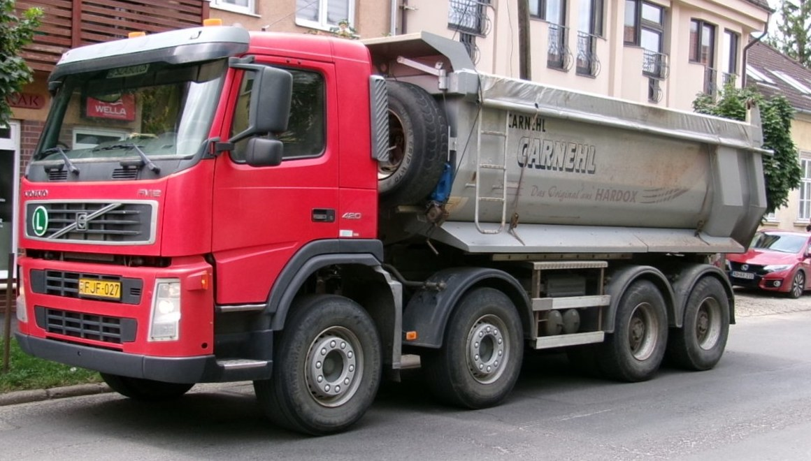

AA Algèbre et analyse — coefficient multiplicateur, proportionnalitéGE Géométrie — volume d'un pavé droit
Ce qu’il faut savoir avant
On creuse un volume en place, on transporte un volume foisonné : × 1,25 pour de la terre.
Une rotation est un aller, un déchargement et un retour.
Un demi-voyage n’existe pas : les voyages s’arrondissent au-dessus.
Une demi-rotation non plus : le nombre de rotations par jour s’arrondit au-dessous.

Deux arrondis dans le même problème, et ils ne vont pas dans le même sens. Les voyages à faire s’arrondissent au-dessus, il en faut assez ; les rotations tenues dans une journée s’arrondissent au-dessous, la journée ne s’allonge pas.
Le foisonnement, en deux lignes
La terre extraite occupe plus de place que dans le sol : elle gonfle. Un foisonnement de 25 % signifie que 100 m³ en place deviennent 125 m³ une fois dans la benne.

Le tas fait toujours plus de volume que le trou d’où il sort. Photo U.S. Army, domaine public, recadrée.
En place
Le calcul
Foisonné
100 m³
× 1,25
125 m³
40 m³
× 1,25
50 m³
150 m³ foisonnés
÷ 1,25
120 m³ en place
96 m³ foisonnés
÷ 1,20
80 m³ en place
On revient du foisonné à l’en place en retirant 25 %. 125 m³ moins 25 % font 93,75 m³, et non 100. Il faut diviser par 1,25, pas soustraire, le même piège qu’au défi 1, avec de la terre à la place des euros.
Pour aller plus loin
Ce que dit la deuxième figurePour aller plus loin›
Les trois ouvrages du schéma se calculent différemment, et le troisième piège tout le monde.
La fouille et la tranchée sont des pavés droits : longueur × largeur × profondeur.
Le puits est un cylindre, et son énoncé donne un diamètre de 1,20 m, donc un rayon de 0,60 m. Prendre 1,20 pour rayon multiplie le volume par quatre. C’est le même piège qu’à la fiche 12, et il ne s’use pas.
Je m’entraîne
Les mêmes séries que sur la feuille. On remplit chaque case, puis on vérifie la série entière d’un coup.
Série · PR
Série 1, en place, foisonné, et retour
100 m³ en place, foisonnement 25 %, en m³ foisonnés
40 m³ en place, foisonnement 30 %, en m³ foisonnés
150 m³ foisonnés, foisonnement 25 %, en m³ en place
96 m³ foisonnés, foisonnement 20 %, en m³ en place
Les deux premières lignes multiplient, les deux dernières divisent. Le sens de lecture change tout.
L’observation à écrire
Les deux dernières lignes de la série 1 ne se font pas comme les deux premières. C’est la question de la feuille, et elle se rédige.
Exercice · PR
Ce qui change entre le haut et le bas de la série 1
Les deux premières lignes et les deux dernières ne se traitent pas de la même façon. Qu’est-ce qui change ? Écrivez-le en une phrase.
Regardez, ligne par ligne, ce qui est donné et ce qui est demandé. Le coefficient ne change pas ; c’est le sens de lecture qui change.
J’ai dit ce qu’on fait dans les deux premières lignes
J’ai dit ce qu’on fait dans les deux dernières
J’ai dit ce qui le décide : le volume donné est en place, ou déjà foisonné
Série · GE
Série 2, les volumes à extraire
une fouille de 12 m × 8 m sur 1,50 m
une tranchée de 30 m × 0,60 m × 1,20 m
un puits cylindrique de 1,20 m de diamètre, 4 m de profondeur
Le puits est un cylindre, et 1,20 m est son diamètre. Le rayon en est la moitié.

Une rotation : la benne part pleine, revient vide, et recommence. Photo Globetrotter19, CC BY-SA 4.0, recadrée.
Série · PR
Série 3, les rotations
une rotation dure 45 min, le nombre de rotations en 7 h
ce que font deux camions dans la journée, en rotations
le volume évacué par deux camions avec une benne de 14 m³, en m³
Sept heures en minutes d’abord. On arrondit au-dessous : une rotation entamée n’est pas finie.
Le quiz
40 m³ en place, foisonnement 30 %, font : 12 m³ | 52 m³ | 70 m³
150 m³ foisonnés à 25 % viennent de : 112,5 m³ | 120 m³ en place
Un puits de 1,20 m de diamètre a un rayon de : 1,20 m | 0,60 m
Pour compter les voyages, j’arrondis : au-dessous | au-dessus
Le problème. La fouille du bâtiment
On creuse une fouille de 18 m sur 12 m, profonde de 1,80 m. La terre a un foisonnement de 25 %. Les camions ont une benne de 14 m³, une rotation dure 45 minutes, la journée compte 7 heures, et deux camions travaillent en alternance.
Exercice · GE
Le volume en place
Quel volume de terre y a-t-il dans la fouille ?
Trois dimensions à multiplier. C’est le volume du trou, pas celui des bennes.
Exercice · AA
Le volume foisonné
Quel volume faut-il réellement transporter ?
La terre gonfle en sortant du sol. Le résultat doit être plus grand.
Exercice · AA
Le nombre de voyages
Combien de voyages faut-il en tout ?
Le volume foisonné divisé par la benne. Un camion ne repart pas à moitié plein pour rien, mais un demi-voyage n’existe pas.
Exercice · AA
Les voyages d’une journée
Combien de voyages les deux camions font-ils dans une journée de 7 h ?
Combien de rotations complètes tiennent dans 7 h ? Puis doublez. Une rotation entamée ne compte pas.
Exercice · AA
Le dernier jour
Combien de jours dure l’évacuation, et les camions travaillent-ils une journée pleine le dernier jour ? Justifiez par un calcul.
Divisez le total des voyages par ce que font les deux camions en un jour, puis regardez ce qui reste.
J’ai donné le nombre de jours
J’ai calculé combien de voyages restent le dernier jour
J’ai comparé ce reste à une journée complète
Pour les plus courageux
La carte blanche du défi papier. La seconde question renverse une intuition.
Exercice · AA
Tout évacuer en une journée
Le chef veut tout évacuer en une seule journée. Combien de camions faut-il ? Attention : le nombre de voyages, lui, ne change pas.
Combien de voyages un seul camion fait-il en une journée ? Puis combien de camions pour couvrir le total.
Exercice · AA
Le camion plus gros et plus lent
Une entreprise propose des camions de 20 m³ au lieu de 14, mais leur rotation dure 1 heure au lieu de 45 minutes. Sont-ils plus efficaces ? Comparez ce que chaque type évacue en une journée, puis concluez.
Sept heures divisées par la durée d’une rotation, arrondi au-dessous, puis multiplié par la benne. Faites-le pour les deux.
J’ai calculé le nombre de rotations par jour pour chaque camion
J’ai calculé le volume évacué par jour pour chacun
J’ai dit lequel gagne, et de combien de pour cent
J’ai dit si cela change le nombre de jours du chantier
Défi de dépassement, niveau 2. Aucun corrigé ; rien n'est enregistré, rien n'est noté.
.jpg){kind=link}